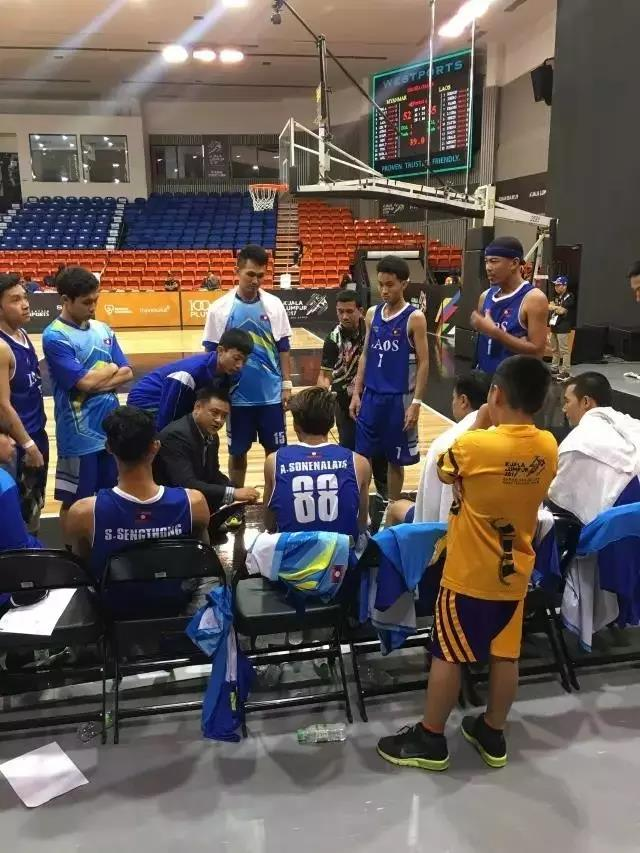
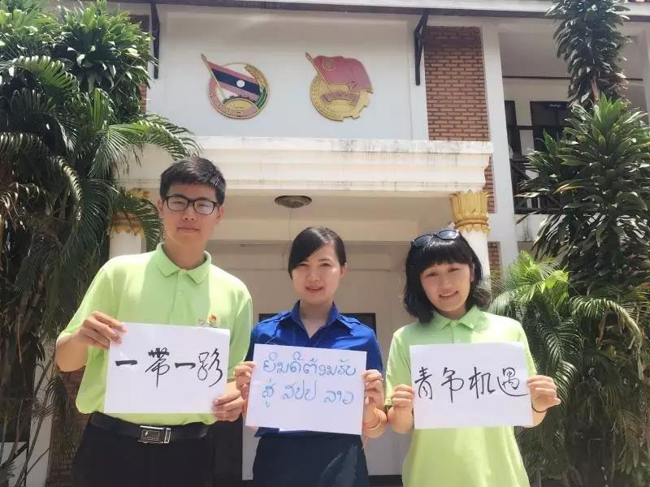

中国青年志愿者孙伟率领老挝国家男篮获佳绩
桂电志愿者网 日期：2017-09-05 来源：中国青年志愿者
8月29日，赴老挝中国青年志愿者、上海体育学院篮球教师、老挝国家男篮主教练孙伟率领老挝队圆满完成东盟运动会参赛任务，随队返回老挝万象。

在东盟运动会上，孙伟执教老挝国家男篮战胜缅甸国家男篮，不但实现了老挝国家男篮在东盟运动会参赛历史上的首场胜利，也使老挝国家队首次进入东盟男篮前八，国际篮协排名也随之上升。
据悉，在团中央、中国驻老挝大使馆、上海团市委、上海体育学院的关心和支持下，赴老挝中国青年志愿者孙伟于今年7月受邀出任老挝国家男篮主教练。受限于当地经济社会发展水平，老挝篮球运动处于“业余化、公益化”的发展阶段。孙伟作为中国青年志愿者的一员，把援助老挝篮球运动的发展作为中国篮球工作者投身“一带一路”建设、促进中老两国人民友谊的公益性事业，不领取任何报酬，坚持无私奉献，为促进中老篮球合作、增进两国人民友谊做出了积极贡献。
孙伟不但是一名出色的篮球教练，也是赴老挝青年志愿者服务队的“老大哥”。孙伟在全队中年龄最大，又有部队经历，便成为了志愿者驻地的“安全员”。由于老挝国家队员都处于兼职状态，白天都有自己的日常工作，只能在每天清晨上班前和夜晚下班后参与集训，于是孙伟便成为全队出门最早、回家最晚的人，每一次驻地大门的开锁、上锁，都成为孙伟艰苦训练、认真负责的忠实记录。

孙伟不是一个人在战斗，在他的身后有中国青年志愿者赴老挝服务队全体队员的鼎力支持。老挝国家男篮的配套保障人员紧缺，赴老挝志愿者在做好本职工作之余，临时“客串”队医、联络等工作，积极协助国家队训练，展示了中国青年志愿者的良好形象。
不仅是孙伟，中国青年志愿者赴老挝服务队的每一位队员都能乐观开朗克服工作和生活上的各种困难，尽职尽责做好志愿服务工作。4月中旬赴老挝以来，在团中央领导下，在上海团市委指导下，中国青年志愿者赴老挝服务队深入学习贯彻习近平总书记在“一带一路”国际合作高峰论坛上的重要讲话精神，在中文教育、医疗卫生、竞技体育、中文广播、IT技术等方面为老挝当地做了大量工作，并组织开展“五四”青年节重温入团誓词、“一带一路”宣传、“带着党旗去援外”等活动，展示了中国青年志愿者的良好形象，为中老友谊添砖加瓦。
柳咏、任凯悦在老挝青年团中央委员会专业技能培训中心教授中文。学员主要由来自老挝党和政府各部门的青年干部组成，该项中文课程已纳入老挝青年干部培训范畴。自5月开学以来，截至8月底，柳咏、任凯悦已向老挝学员授课384个学时，参与课程老挝学员累计已达7680人次。
【责任编辑：李彦龙】